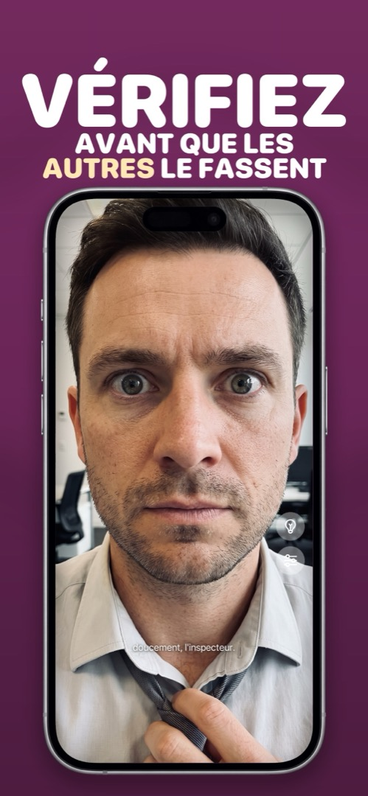

Pourquoi la caméra frontale de votre iPhone inverse-t-elle votre visage ?
Vous cadrez un selfie, tout semble normal dans l’aperçu, et la photo enregistrée paraît légèrement fausse : la raie de l’autre côté, un visage qui vous ressemble un peu moins. Rien n’est cassé. Voici ce qui se passe, et quoi faire.
Aperçu = miroir. Photo enregistrée = ce que voient les autres.
Pendant que vous cadrez un selfie, iOS inverse l’aperçu pour qu’on ait l’impression de se regarder dans une glace : bougez la main droite et la main de droite bouge. Mais quand vous appuyez sur le déclencheur, la photo est enregistrée sans inversion, telle qu’une personne en face de vous vous verrait.
La raison pour laquelle ça paraît faux est bien documentée : l’effet de simple exposition. Vous avez vu votre visage inversé des milliers de fois par jour toute votre vie, c’est donc la version que votre cerveau considère comme « correcte ». Aucun visage n’est parfaitement symétrique, alors la photo non inversée semble légèrement décalée — pour vous, et seulement pour vous. Vos amis, eux, sont habitués à la version photo.
Le réglage iOS qui change ça
Depuis iOS 14, il existe un interrupteur : Réglages → Appareil photo → Inverser la caméra avant. Activez-le et les selfies sont enregistrés exactement comme dans l’aperçu. Ça règle les photos. Ça ne règle pas le problème de fond quand on utilise Appareil photo comme miroir : le déclencheur reste sous le pouce, il n’y a pas de lumière à l’avant et l’aperçu est encombré de commandes.
Pourquoi une application miroir est toujours en miroir
Une application miroir n’a qu’un travail : se comporter comme une glace. Il n’y a pas de version « enregistrée » à retourner, donc ce que vous voyez est toujours le reflet auquel vous êtes habitué, à luminosité maximale, avec zoom et anneau lumineux quand vous en avez besoin. Si vous voulez seulement vérifier votre apparence, pas la capturer, c’est le bon outil.
Comment faire dans Mirrorly
Dans Mirrorly, la question ne se pose jamais, car rien n’est enregistré. Pour vérifier votre apparence :
- Ouvrez Mirrorly. La caméra frontale s’allume, en miroir comme une vraie glace, et le reste.
- Corrigez ce qui doit l’être — cheveux, col, dents. Utilisez le curseur de zoom pour les détails et l’ampoule dans les pièces sombres.
- Fermez l’application. Aucune photo n’a été prise, donc aucune version inversée ne vous attend dans la photothèque.

Mirrorly est gratuit à l’essai sur l’App Store. Un miroir plein écran pour iPhone avec anneau lumineux, zoom et luminosité maximale. Trois vérifications gratuites, puis un achat unique — sans abonnement, sans photo enregistrée, sans compte, sans publicité.